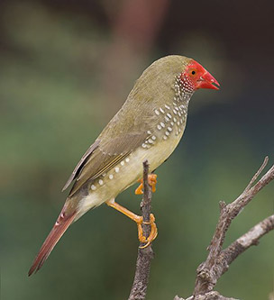

The Star Finch (Neochmia ruficauda) is a species of estrildid finch found in Australia. It inhabits dry grassland and dry savanna habitats.
The habitat of Star Finch is threatened by overgrazing plain of grasslands, removing essential cover for their survival as well as sources of food and water. Selective grazing of perennials during the wet season may also remove grasses that are needed for survival during the dry season. Burning of grassland during the dry season may reduce the fallen seed during the wet season and thus reduce the food supply needed by Star Finch. This species is also threatened by cage-bird trades.